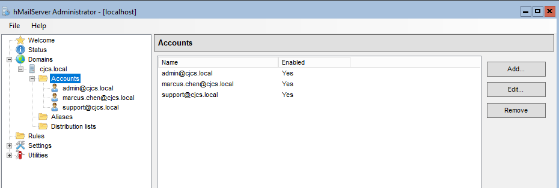
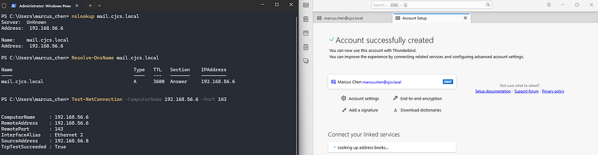
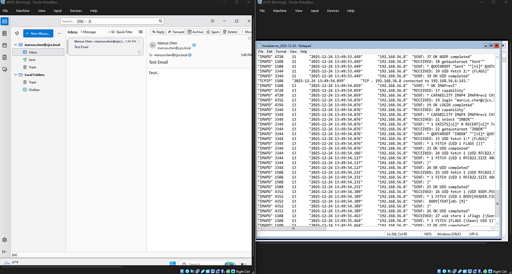
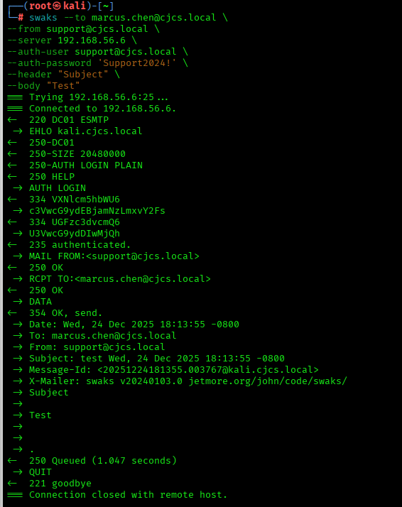

Installing My Own Email Server Using hMailServer
The next component of my homelab setup is installing the email server on my domain controller — DC01. I just finished creating the fake company database and employee login portal.
1Initial Setup
- Download hMailServer
- Login as Administrator
Add DNS Records
No one wants to be username@192.168.1.1 — I will need to create DNS records to resolve the IP address to the local hostname of cjcs.local.
# Add MX record for mail.cjcs.local
Add-DnsServerResourceRecordMX -Name "@" -ZoneName "cjcs.local" `
-MailExchange "mail.cjcs.local" -Preference 10
# Add A record for mail server
Add-DnsServerResourceRecordA -Name "mail" -ZoneName "cjcs.local" `
-IPv4Address "192.168.x.x"
# Verify
nslookup mail.cjcs.local 
DC01 knows it has a mail server, let’s check on MGR1:
Create The Accounts In hMailServer

- admin@cjcs.local — Server privileges
- marcus.chen@cjcs.local — User privileges
- support@cjcs.local — Domain privileges
I doubt I will delve too deeply into hMailServer administration, but I wanted to create account with varying privileges in case in came in handy down the line.
2Logging In For the First Time
- Download Mozilla Thunderbird
- Use the following settings:
- Incoming: IMAP (port 143)
- Server: mail.cjcs.local
- Security: None
- Outgoing: SMTP (port 25)
- Server: mail.cjcs.local
- Security: None

Port connection successful, DNS resolved, account created.
Sending The First Email
Let’s take the basic functionality by sending an email to myself using the marcus.chen account and verify with from the hMailServer logs.

Success! I spun up my own email server and sent myself an email.
From KALI with swaks
Let’s try sending an email via command line from KALI.


Let’s say an attacker gains credentials to an IT Support email account — this is exactly how they might phish an executive.
3Next Steps
The company database and employee login portal is up. The email server is online. I successfully sent an email from the command line using compromised credentials. The next step is to follow the full attack chain from network reconnaissance, to credential harvesting, to lateral movement and full domain compromise. KALI will send an email to MGR1 with a cloned login portal which causes them to type in their password to “the employee login portal”. This will allow KALI to exfiltrate the company database and pivot to the domain controller for persistence.
Follow me:
My Website
Rules and reproduction steps: github.com/purplepyram1d/rmm-multiplicity